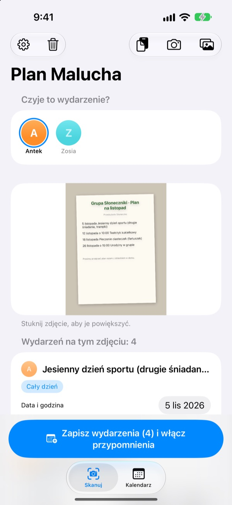
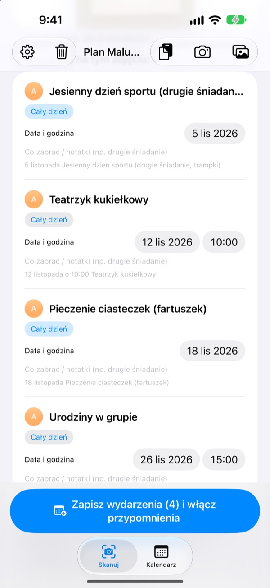
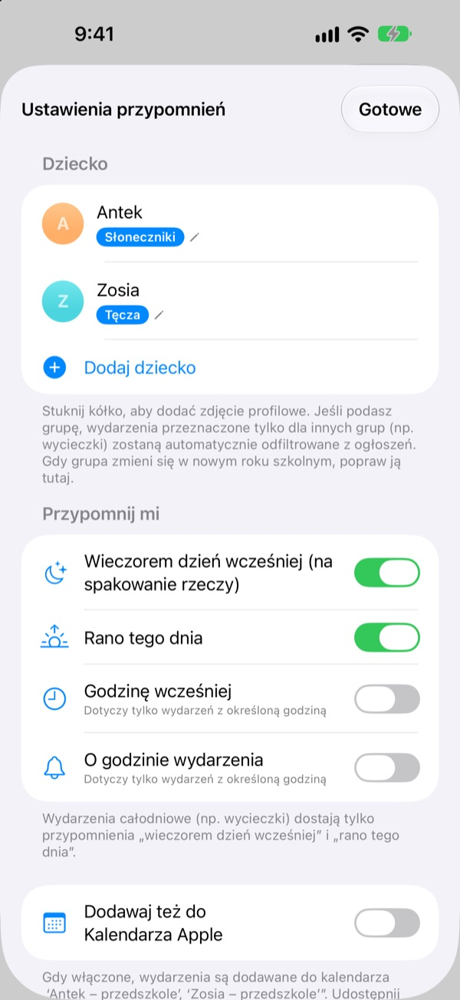
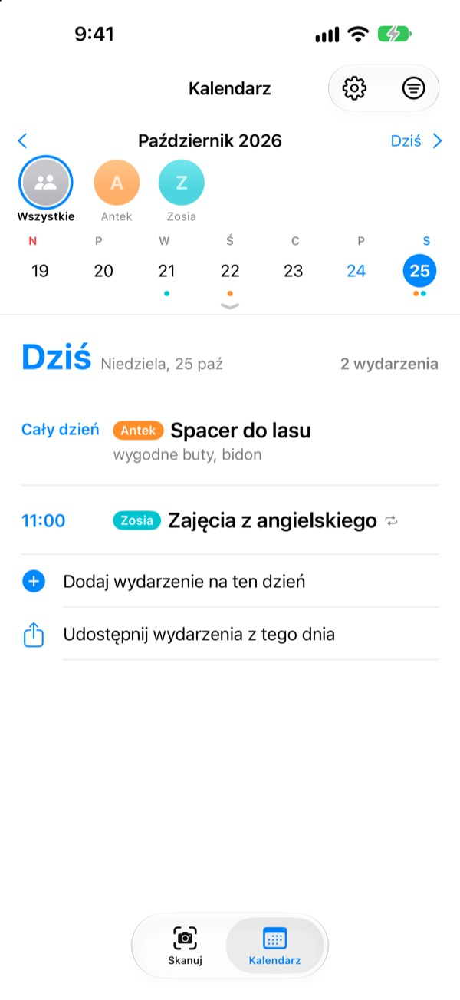

Wystarczy zdjęcie.
O pakowaniu przypomnimy.
Zrób zdjęcie miesięcznego planu, który dostajesz w przedszkolu. Plan Malucha odczyta daty, godziny i nazwy wydarzeń i doda je wszystkie naraz. Wieczorem przed wycieczką, o 20:00, przyjdzie przypomnienie: nie zapomnij o drugim śniadaniu.
Wszystkie funkcje są bezpłatne. Zdjęcia nie opuszczają Twojego iPhone'a.

Zrób zdjęcie ogłoszenia
Oto przykładowe ogłoszenie z wydarzeniami na przyszły miesiąc. Zrób zdjęcie, a tak jak w aplikacji wyciągnięte zostaną wydarzenia i lista rzeczy, a przypomnienia zaplanują się na wybrane godziny.
Wciąż przepisujesz ogłoszenia z przedszkola do kalendarza?
Pięć, sześć wydarzeń w miesiącu, a za każdym razem trzeba zabrać coś innego: drugie śniadanie, strój na WF, fartuszek. Planu na lodówce nie widać w drodze do pracy, a przypominasz sobie zawsze tego samego ranka. Plan Malucha zamienia tę kartkę w wydarzenia w kalendarzu i przypomnienia.
Jedno zdjęcie, cały miesiąc
Miesięczna tabela, list do rodziców czy pojedyncze ogłoszenie: zrób zdjęcie albo wybierz je z biblioteki, a daty, godziny i nazwy wydarzeń zostaną odczytane za Ciebie. Możesz też wkleić wiadomość od wychowawczyni; słowa jak „jutro” czy „w ten piątek” zamienią się w prawdziwe daty.
Przed zapisaniem od razu poprawisz tytuł, datę lub listę rzeczy, a zbędne przesuniesz, by usunąć. Wpisz grupę dziecka, a wydarzenia tylko dla innych grup odpadną same.

Wieczorem przypomnienie
Wybierz 20:00 dzień wcześniej, 7:30 rano tego dnia, godzinę przed lub dokładnie o czasie. Lista rzeczy pojawia się w przypomnieniu, więc plecak będzie spakowany.
Z Kalendarzem Apple wydarzenia trafiają do kalendarza z imieniem dziecka i nic nie dodaje się dwa razy.

Kilkoro dzieci i cała rodzina
Każde dziecko ma swój kolor. Oglądaj wszystkie razem albo po kolei; na podstawie wcześniejszych wydarzeń aplikacja zgadnie, czyje jest nowe ogłoszenie.
Wyślij link z zaproszeniem, a partner, dziadkowie czy niania zobaczą i będą mogli edytować te same wydarzenia. Widżet na ekranie początkowym pokazuje, co nadchodzi.

Start w trzech krokach
- 1
Dodaj dziecko
Imię i grupa. Zdjęcie profilowe kiedy zechcesz.
- 2
Sfotografuj ogłoszenie
Prosto z przodu i z wyraźnym tekstem odczyt jest najlepszy.
- 3
Sprawdź i zapisz
Zezwól na powiadomienia, a przypomnienia przyjdą o wybranej porze.
Kiedy przychodzą przypomnienia
- 20:00 dzień wcześniej
- Na pakowanie. Domyślnie włączone
- 7:30 rano tego dnia
- Co dziś. Domyślnie włączone
- Godzinę wcześniej
- Tylko dla wydarzeń z godziną
- O godzinie wydarzenia
- Tylko dla wydarzeń z godziną
Wydarzenia całodniowe, takie jak wycieczka, mają tylko przypomnienie wieczorem dzień wcześniej i rano. Każde możesz w dowolnej chwili włączyć lub wyłączyć w ustawieniach.
Wszystkie funkcje są bezpłatne
Za darmo
- Odczyt wydarzeń ze zdjęć i wiadomości
- Poprawki przed zapisaniem, filtr innych grup
- Przypomnienia wieczorem, rano, godzinę przed i o czasie
- Kolor dla każdego dziecka i wspólny kalendarz
- Synchronizacja z Kalendarzem Apple
- Udostępnianie rodzinie przez link
- Widżet na ekranie początkowym
Wesprzyj twórcę
- W ustawieniach możesz zostawić drobny napiwek w dowolnej kwocie
- Napiwek niczego nie odblokowuje. Aplikacja działa tak samo
Bez reklam i bez subskrypcji.
Częste pytania
Jakie zdjęcia działają?
Miesięczne plany w tabeli, ogłoszenia pisane tekstem oraz pojedyncze kartki i ulotki. Zdjęcie zrobione prosto z przodu, z wyraźnym tekstem, odczytuje się najlepiej. Możesz też wybrać kilka zdjęć i zeskanować je naraz.
Brakuje kilku wydarzeń albo w tytule jest literówka.
Pismo odręczne lub blady druk bywają trudne do odczytania. Popraw tytuł, datę lub listę rzeczy bezpośrednio na liście albo przesuń, by usunąć zbędne. Brakujące wydarzenie dodasz przez „Dodaj wydarzenie ręcznie” na karcie Skanuj, a potem zapiszesz ponownie.
Nie dostaję przypomnień.
Sprawdź w Ustawienia > Powiadomienia > Plan Malucha, czy powiadomienia są dozwolone. W ustawieniach aplikacji (⚙️) wybierzesz też, które przypomnienia chcesz dostawać.
Pojawiają się wydarzenia innych grup.
Wpisz w ustawieniach nazwę grupy dziecka, a wydarzenia tylko dla innych grup zostaną odfiltrowane. Gdy w nowym roku zmieni się grupa, wystarczy poprawić ją tam.
Mam więcej niż jedno dziecko.
W ustawieniach dodasz dowolną liczbę dzieci, każde ze zdjęciem profilowym. Przy skanowaniu wybierz, czyje to wydarzenia: w kalendarzu każde dziecko ma swój kolor, a widok wspólny możesz przełączać na filtr dla jednego dziecka.
Jak udostępnić plan partnerowi?
W ustawieniach, w sekcji „Udostępnianie wydarzeń”, stuknij „Zaproś do udostępniania” i wyślij link wiadomością. Zaproszona osoba widzi i edytuje wszystkie dzieci i wydarzenia, a zmiany z obu stron od razu pojawiają się u obojga. Nie ma to związku z Chmurą rodzinną Apple.
Czy można udostępniać inaczej?
Przyciskiem udostępniania na karcie Kalendarz wyślesz plik Planu Malucha, plik kalendarza (.ics) lub podsumowanie tekstowe. Po włączeniu „Dodawaj też do Kalendarza Apple” powstaje kalendarz z imieniem dziecka; udostępnij go przez iCloud w aplikacji Kalendarz, a rodzina też będzie na bieżąco.
Czy moje zdjęcia lub wydarzenia są gdzieś wysyłane?
Nie. Tekst ze zdjęć jest odczytywany w całości na urządzeniu, a dane zostają tylko na nim. Wydarzenia przechodzą przez Twój iCloud wyłącznie wtedy, gdy kogoś zaprosisz przez „Udostępnianie wydarzeń”, i tylko do zaproszonych osób.
Coś nie działa albo czegoś brakuje? Napisz na leeo@kakao.com. Zwykle odpowiadamy w ciągu 2–3 dni. Model urządzenia i wersja iOS bardzo pomogą.